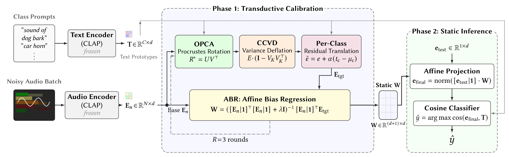

Publication 01 · CIKM 2026
PRISM
Prototype-Rectified Iterative Self-supervised Manifold Denoising under Severe Acoustic Shift

Abstract
Audio-Text Foundation Models (ATMs) fail catastrophically under severe acoustic noise, yet existing adaptation strategies either rely on gradient-based Test-Time Adaptation (TTA), which reinforces noise rather than signal, or on prompt tuning that requires privileged noise annotations unavailable at inference. We address these failures with PRISM (Prototype-Rectified Iterative Self-supervised Manifold Denoising), a training-free, source-free TTA framework grounded in the Affine Noise Hypothesis: severe acoustic noise induces a low-rank affine shift in the multimodal latent space, with more than 90% of distortion energy confined to the leading 60 principal components.
PRISM estimates and reverses this distortion from an unlabeled target batch using frozen text prototypes as geometric anchors via three closed-form geometric corrections compiled into a single static projection matrix by Affine Bias Regression. At inference, adaptation reduces to one matrix-vector multiplication in 0.0009 ms, making it substantially faster than gradient-based TTA while requiring no additional training. On UrbanSound8K, PRISM improves over the zero-shot baseline by 12.94 percentage points and surpasses an oracle-assisted TTA baseline by 9.41 percentage points. We further identify the Polyphonic Trap, a principled failure mode of subspace deflation for broadband classes, and resolve it via Confidence-Aware Regression (CAR), recovering up to 8.16 percentage points for the worst-affected class.
Key idea
A geometric correction
at test time.
CLAP-like audio-text models can lose their alignment when noise changes the input. PRISM reads that shift from an unlabeled batch, then corrects the representation with frozen text prototypes and one static projection. No gradients, noise labels, or extra training are needed.
The problem
Audio-text models can perform well in clean environments but degrade when acoustic conditions change. Real-world audio contains traffic, crowds, machinery, reverberation, and other sources of distortion.
The key idea
PRISM treats acoustic corruption as a geometric shift in representation space. Frozen text prototypes act as anchors while closed-form corrections estimate and reverse the distortion from an unlabeled target batch.
Contributions
- Formulates severe acoustic noise as a low-rank affine shift in multimodal latent space.
- Introduces a training-free, source-free adaptation procedure with no privileged noise annotations.
- Compiles geometric corrections into one static projection matrix for fast inference.
- Identifies and resolves the Polyphonic Trap using Confidence-Aware Regression.